come from? come from?
come from? come from?Baba is You was developed by Arvi Teikari, also known under the alias "Hempuli". Most of its development was documented on Hempuli's blog and streamed on Twitch. It's quite interesting to look back through the blog, actually, but I have also written out an abridged version of the game's development here.
The game originated as an entry for the 2017 Nordic Game Jam—at this stage, Baba is You looked very different from the final game, but the foundational ideas were all there:
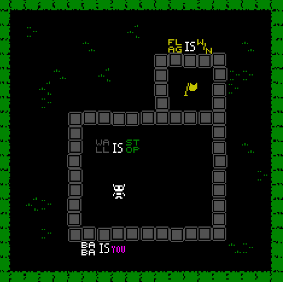
The theme of the jam was “Not There”, and at some point it got me thinking about “not” as an operator in programming/logic. This in turn made me think of a puzzle game where the game logic is part of the game world, and eventually this idea turned into my entry. I was expecting to run to some really hairy coding problems and not be able to finish, but hey, that very much didn’t happen!
- Hempuli (April 28, 2017)
This build of the game is still available to download and play on Itch. Following the game jam, Hempuli wasn't "totally sure where to take the game from [there]". Originally, he planned to just add a little bit of polish and release as-is, but the reactions of players spurred him to make something larger out of the game. Two weeks later, he already had close to 50 finished levels [HUH.] and another two weeks later the art direction had already been decided on.
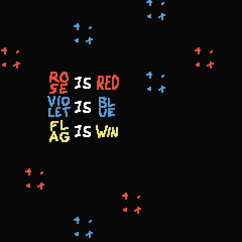
The game's development progressed quickly over the next few months: "Make" was added in early July, "Not" in early September, each word accompanied by a handful of levels. In late August Hempuli even designed Space Invaders in the game:
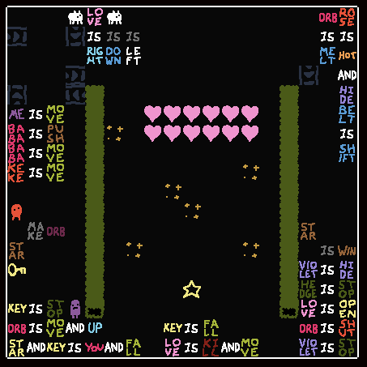
Color palettes were implemented in late September to support Hempuli's plan of organizing the game's puzzles into small themed areas. "Empty" was implemented during this time, and music began to be made around the same time, too. By the end of 2017, Hempuli dropped the first trailer:
Hempuli decided the game's release date would be summer 2018, and the game eventually released on March 13, 2019. I feel like it would get boring if I continued on with development tidbits so instead have some fun gifs from Hempuli's blog:
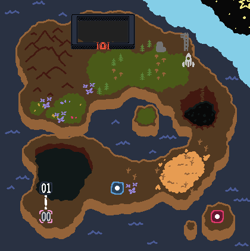
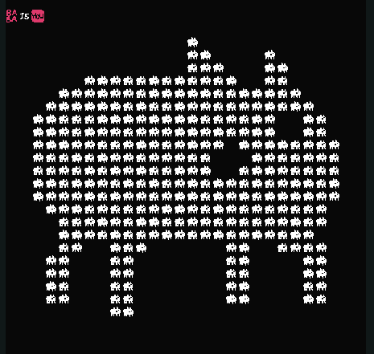
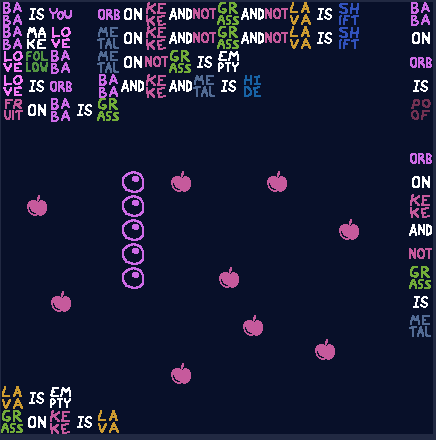
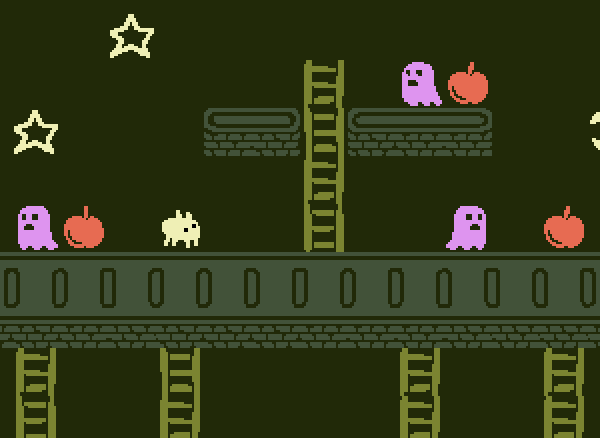
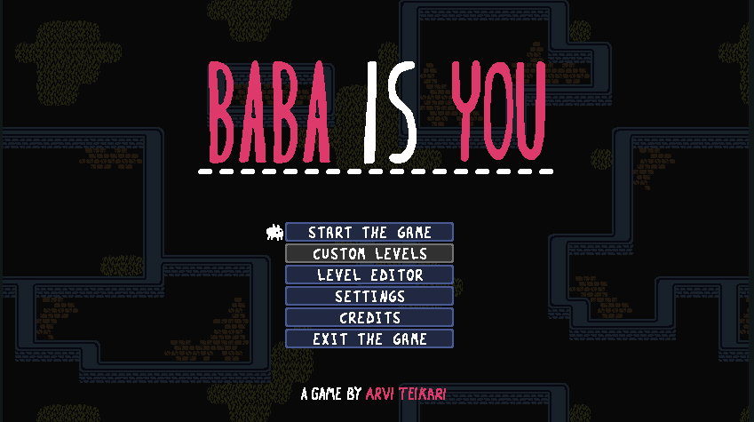
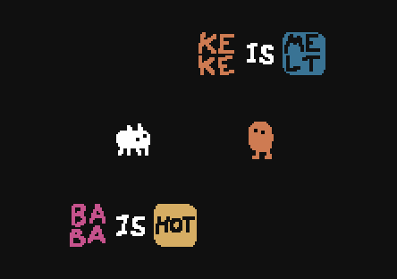
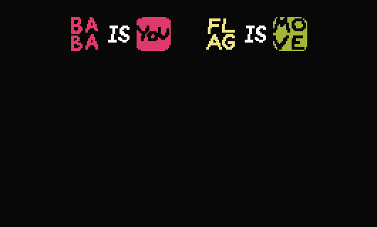
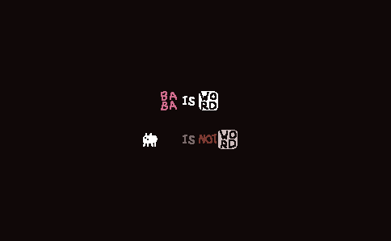